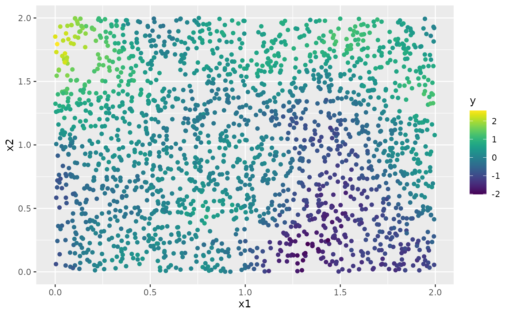

Intrinsic models in the rSPDE package
David Bolin
2024-05-08
Source:vignettes/intrinsic.Rmd
intrinsic.RmdIntroduction
In this vignette we provide a brief introduction to the intrinsic
models implemented in the rSPDE package.
Model specification and simulation
The intrinsic models are defined as
\[
(-\Delta)^{\beta/2}(\kappa^2-\Delta)^{\alpha/2}(\tau u) = \mathcal{W},
\] where \(\alpha + \beta >
d/2\) and \(d\) is the dimension
of the spatial domain. These models are handled by performing two
rational approximations, one for each fractional operator.
To illustrate these models, we begin by defining a mesh over \([0,1]\times [0, 1]\):
library(fmesher)
bnd <- fm_segm(rbind(c(0, 0), c(2, 0), c(2, 2), c(0, 2)), is.bnd = TRUE)
mesh_2d <- fm_mesh_2d(
boundary = bnd,
cutoff = 0.04,
max.edge = c(0.05)
)
plot(mesh_2d, main = "")We now use the intrinsic.matern.operators() function to
construct the rSPDE representation of the model.
library(rSPDE)
kappa <- 10
tau <- 0.01
alpha <- 2
beta <- 1
op <- intrinsic.matern.operators(kappa = kappa, tau = tau, alpha = alpha,
beta = beta, mesh = mesh_2d)To see that the rSPDE model is approximating the true
model, we can compare the variogram of the approximation with the true
variogram (implemented in variogram.intrinsic.spde()) as
follows.
Sigma <- op$A[,-1] %*% solve(op$Q[-1,-1], t(op$A[,-1]))
One <- rep(1, times = ncol(Sigma))
D <- diag(Sigma)
Gamma <- 0.5 * (One %*% t(D) + D %*% t(One) - 2 * Sigma)
point <- matrix(c(1,1),1,2)
Aobs <- spde.make.A(mesh = mesh_2d, loc = point)
vario <- variogram.intrinsic.spde(point, mesh_2d$loc[,1:2], kappa,
alpha = alpha, tau = tau,
beta = beta, L = 2, d = 2)
d = sqrt((mesh_2d$loc[,1]-point[1])^2 + (mesh_2d$loc[,2]-point[2])^2)
plot(d, Aobs%*%Gamma, xlim = c(0,0.5), ylim = c(0,0.2))
lines(sort(d),sort(vario),col=2, lwd = 2)We can now use the simulate function to simulate a
realization of the field \(u\):
u <- simulate(op,nsim = 1)
proj <- fm_evaluator(mesh_2d, dims = c(100, 100))
field <- fm_evaluate(proj, field = as.vector(u))
field.df <- data.frame(x1 = proj$lattice$loc[,1],
x2 = proj$lattice$loc[,2],
y = as.vector(field))
library(ggplot2)
library(viridis)
#> Loading required package: viridisLite
ggplot(field.df, aes(x = x1, y = x2, fill = y)) +
geom_raster() +
scale_fill_viridis()By default, the field is simulated with a zero-integral constraint.
Let us now consider a simple Gaussian linear model where the spatial field \(u(\mathbf{s})\) is observed at \(m\) locations, \(\{\mathbf{s}_1 , \ldots , \mathbf{s}_m \}\) under Gaussian measurement noise. For each \(i = 1,\ldots,m,\) we have \[ \begin{align} y_i &= u(\mathbf{s}_i)+\varepsilon_i\\ \end{align}, \] where \(\varepsilon_1,\ldots,\varepsilon_{m}\) are iid normally distributed with mean 0 and standard deviation 0.1.
To generate a data set y from this model, we first draw
some observation locations at random in the domain and then use the
spde.make.A() functions (that wraps the functions
fm_basis(), fm_block() and
fm_row_kron() of the fmesher package) to
construct the observation matrix which can be used to evaluate the
simulated field \(u\) at the
observation locations. After this we simply add the measurment
noise.
n_loc <- 2000
loc_2d_mesh <- matrix(runif(n_loc * 2), n_loc, 2)
A <- spde.make.A(
mesh = mesh_2d,
loc = loc_2d_mesh
)
sigma.e <- 0.1
y <- A %*% u + rnorm(n_loc) * sigma.eThe generated data can be seen in the following image.
library(ggplot2)
library(viridis)
df <- data.frame(x1 = as.double(loc_2d_mesh[, 1]),
x2 = as.double(loc_2d_mesh[, 2]), y = as.double(y))
ggplot(df, aes(x = x1, y = x2, col = y)) +
geom_point() +
scale_color_viridis()
Fitting the model with R-INLA
We will now fit the model using our R-INLA implementation of
the rational SPDE approach. Further details on this implementation can
be found in R-INLA implementation of the
rational SPDE approach.
We begin by loading the INLA package and creating the
\(A\) matrix, the index, and the
inla.stack object. For now, the model can only be estimated
with \(\beta = 1\) and \(\alpha = 1\) or \(\alpha = 2\). For these non-fractional
models, we can use the standard INLA functions to make the required
elements.
library(INLA)
#> Loading required package: sp
#> This is INLA_24.05.01-1 built 2024-05-01 18:49:50 UTC.
#> - See www.r-inla.org/contact-us for how to get help.
#> - List available models/likelihoods/etc with inla.list.models()
#> - Use inla.doc(<NAME>) to access documentation
mesh.index <- inla.spde.make.index(name = "field", n.spde = mesh_2d$n)
st.dat <- inla.stack(data = list(y = as.vector(y)), A = A, effects = mesh.index)We now create the model object.
rspde_model <- rspde.intrinsic.matern(mesh = mesh_2d, alpha = alpha)Finally, we create the formula and fit the model to the data:
f <- y ~ -1 + f(field, model = rspde_model)
rspde_fit <- inla(f,
data = inla.stack.data(st.dat),
family = "gaussian",
control.predictor = list(A = inla.stack.A(st.dat)))We can get a summary of the fit:
summary(rspde_fit)
#> Time used:
#> Pre = 0.391, Running = 17.9, Post = 0.159, Total = 18.5
#> Random effects:
#> Name Model
#> field CGeneric
#>
#> Model hyperparameters:
#> mean sd 0.025quant 0.5quant
#> Precision for the Gaussian observations 98.38 3.298 92.03 98.32
#> Theta1 for field -4.71 0.128 -4.96 -4.71
#> Theta2 for field 2.43 0.182 2.06 2.43
#> 0.975quant mode
#> Precision for the Gaussian observations 105.02 98.22
#> Theta1 for field -4.46 -4.71
#> Theta2 for field 2.78 2.43
#>
#> Marginal log-Likelihood: 1543.69
#> is computed
#> Posterior summaries for the linear predictor and the fitted values are computed
#> (Posterior marginals needs also 'control.compute=list(return.marginals.predictor=TRUE)')To get a summary of the fit of the random field only, we can do the following:
result_fit <- rspde.result(rspde_fit, "field", rspde_model)
summary(result_fit)
#> mean sd 0.025quant 0.5quant 0.975quant mode
#> tau 0.00909004 0.00115941 0.0070203 0.00902628 0.0115939 0.00885558
#> kappa 11.49920000 2.08926000 7.9072500 11.32750000 16.0866000 10.99450000
tau <- op$tau
result_df <- data.frame(
parameter = c("tau", "kappa"),
true = c(tau, kappa), mean = c(result_fit$summary.tau$mean,
result_fit$summary.kappa$mean),
mode = c(result_fit$summary.tau$mode, result_fit$summary.kappa$mode)
)
print(result_df)
#> parameter true mean mode
#> 1 tau 0.01 0.009090039 0.008855579
#> 2 kappa 10.00 11.499161583 10.994501463Kriging with R-INLA implementation
Let us now obtain predictions (i.e., do kriging) of the latent field on a dense grid in the region.
We begin by creating the grid of locations where we want to compute
the predictions. To this end, we can use the
rspde.mesh.projector() function. This function has the same
arguments as the function inla.mesh.projector() the only
difference being that the rSPDE version also has an argument
nu and an argument rspde.order. Thus, we
proceed in the same fashion as we would in R-INLA’s standard SPDE
implementation:
projgrid <- inla.mesh.projector(mesh_2d,
xlim = c(0, 1),
ylim = c(0, 1)
)This lattice contains 100 × 100 locations (the default) which are shown in the following figure:
coord.prd <- projgrid$lattice$loc
plot(coord.prd, type = "p", cex = 0.1)
Let us now calculate the predictions jointly with the estimation. To this end, first, we begin by linking the prediction coordinates to the mesh nodes through an \(A\) matrix
A.prd <- projgrid$proj$AWe now make a stack for the prediction locations. We have no data at
the prediction locations, so we set y= NA. We then join
this stack with the estimation stack.
ef.prd <- list(c(mesh.index))
st.prd <- inla.stack(
data = list(y = NA),
A = list(A.prd), tag = "prd",
effects = ef.prd
)
st.all <- inla.stack(st.dat, st.prd)Doing the joint estimation takes a while, and we therefore turn off
the computation of certain things that we are not interested in, such as
the marginals for the random effect. We will also use a simplified
integration strategy (actually only using the posterior mode of the
hyper-parameters) through the command
control.inla = list(int.strategy = "eb"), i.e. empirical
Bayes:
rspde_fitprd <- inla(f,
family = "Gaussian",
data = inla.stack.data(st.all),
control.predictor = list(
A = inla.stack.A(st.all),
compute = TRUE, link = 1
),
control.compute = list(
return.marginals = FALSE,
return.marginals.predictor = FALSE
),
control.inla = list(int.strategy = "eb")
)We then extract the indices to the prediction nodes and then extract the mean and the standard deviation of the response:
id.prd <- inla.stack.index(st.all, "prd")$data
m.prd <- matrix(rspde_fitprd$summary.fitted.values$mean[id.prd], 100, 100)
sd.prd <- matrix(rspde_fitprd$summary.fitted.values$sd[id.prd], 100, 100)Finally, we plot the results. First the mean:
field.pred.df <- data.frame(x1 = projgrid$lattice$loc[,1],
x2 = projgrid$lattice$loc[,2],
y = as.vector(m.prd))
ggplot(field.pred.df, aes(x = x1, y = x2, fill = y)) +
geom_raster() + scale_fill_viridis()
Then, the marginal standard deviations:
field.pred.sd.df <- data.frame(x1 = proj$lattice$loc[,1],
x2 = proj$lattice$loc[,2],
sd = as.vector(sd.prd))
ggplot(field.pred.sd.df, aes(x = x1, y = x2, fill = sd)) +
geom_raster() + scale_fill_viridis()